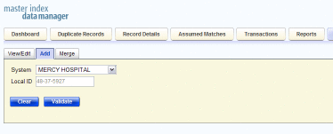
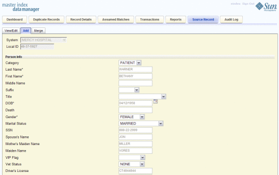
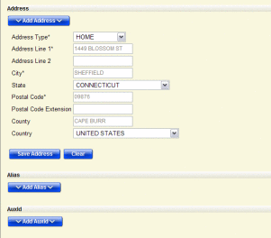

Adding an Object Profile on the MIDM
This section provides the step-by-step instructions you need in order to add object profiles to the master index database. When you add an object profile, you are actually creating a source record. The master index application calculates the SBR portion of the object profile when you commit the source record to the database. When you create a source record, the master index either adds the new record to the database or updates an existing record if a match is found.
Adding an object profile includes the following steps:
Step 1: Obtain Information about the Object
Before you begin to add a new object to the master index application, you should obtain certain information about the object. If necessary, review the fields displayed on the pages of the MIDM to learn what types of information you need to enter about the object. You should provide as much information as is available for each object.
When you have gathered all the necessary data, continue to Step 2: Specify a System and Local ID.
Step 2: Specify a System and Local ID
Each object profile is associated with at least one source record. Before you add data to an object profile, you must specify the object’s local ID in a specific system. This creates the source record component of the object profile.
Figure 29 Add Source Record - System and Local ID
To Specify a System and Local ID
- Complete Step 1: Obtain Information about the Object.
- On the MIDM main menu, select Source Record.
The Source Record page appears.
- In the System field, select the name of the source system from which the new record originated.
- In the Local ID field, enter the local ID assigned to the
new record by the specified system.
Note - The name of the Local ID field might have been modified for your use. See your system administrator for more information.
- Click Validate.
If the record does not already exist, the page changes to display profile fields.
- Continue to Step 3: Specify Parent Object Information.
Step 3: Specify Parent Object Information
When you add a new object profile to the master index database, you need to enter certain information about the object. The required information varies depending on the type of objects in the index and the configuration of the application.
Figure 30 Add Source Record - Parent Object
To Specify Parent Object Information
- Complete Step 2: Specify a System and Local ID.
- On the Source Record page, fill in the open fields.
- Continue to Step 4: Specify Child Object Information.
Step 4: Specify Child Object Information
After you specify information for the parent object in the object profile, you can add child objects to the profile.
Figure 31 Add Source Record - Child Objects
To Specify Child Object Information
- Complete Step 3: Specify Parent Object Information.
- On the Source Record page, scroll down until you see Add child_type, where child_type is the type of child object you want to add (for example, Add Address).
- Click Add child_type.
The page changes to display the fields associated with that child object type.
- Fill in any open fields for the child object.
- Click Save child_type.
- Repeat the above steps for each child object to add.
- Continue to Step 5: Save the Object Profile.
Step 5: Save the Object Profile
After you specify all the required information for an object profile, save the profile to the database or the information you entered will be lost.
To Save the Object Profile
- Complete Step 4: Specify Child Object Information.
- Scroll to the bottom of the page and click Submit.
Note - When the transaction completes, the MIDM returns to the initial Add page and a message displays informing you whether a new profile was added to the database, a new profile was added and it has potential duplicates, or an existing profile was updated with the information you entered.
- To add another source record, repeat the steps beginning with Step 1: Obtain Information about the Object.